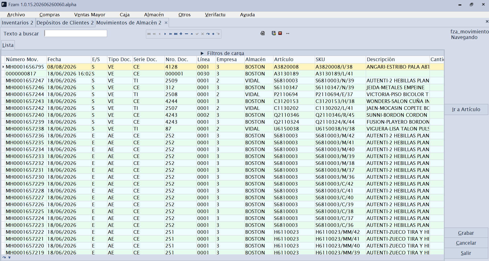
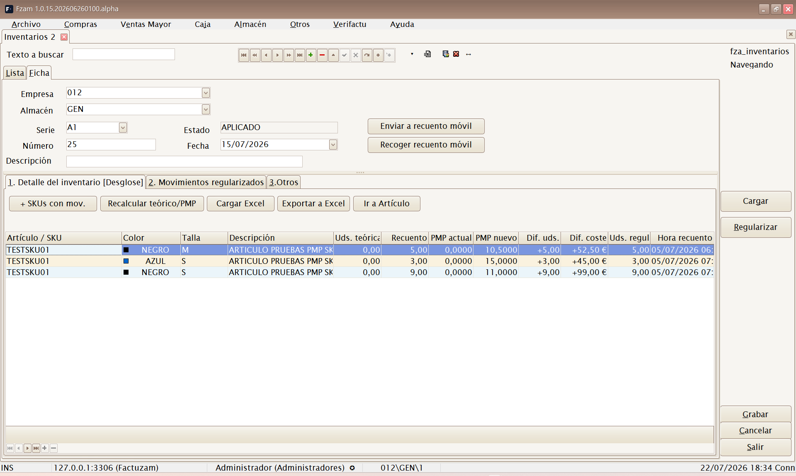
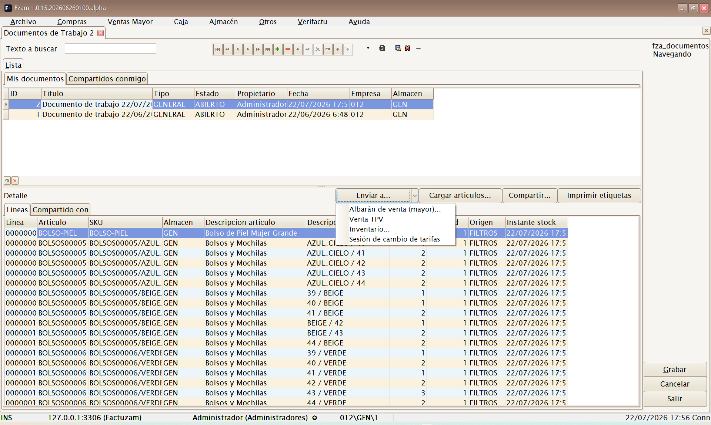
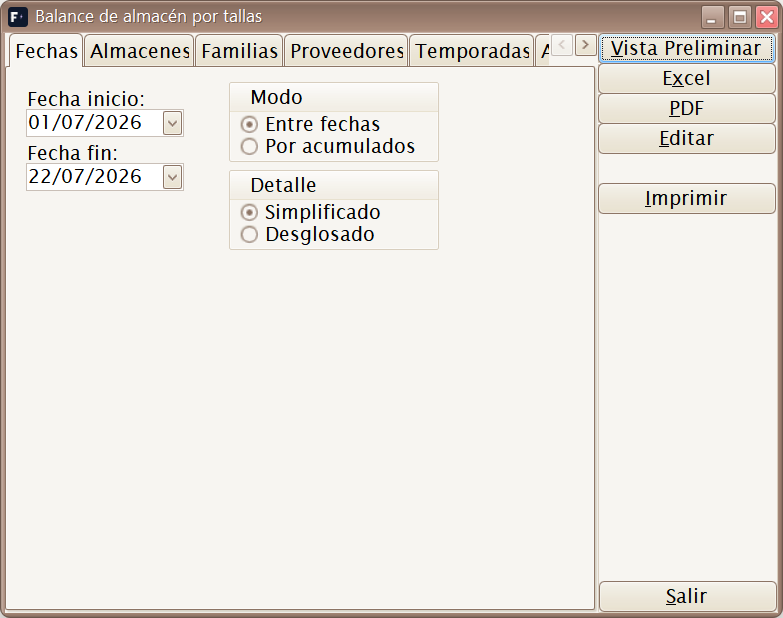
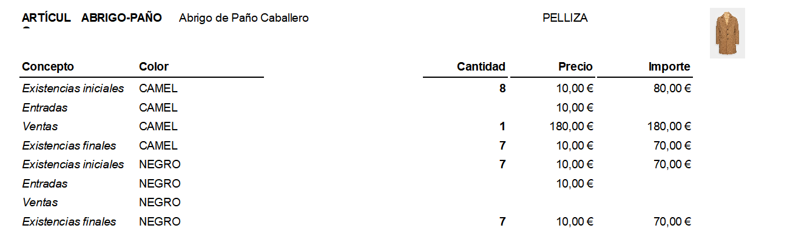
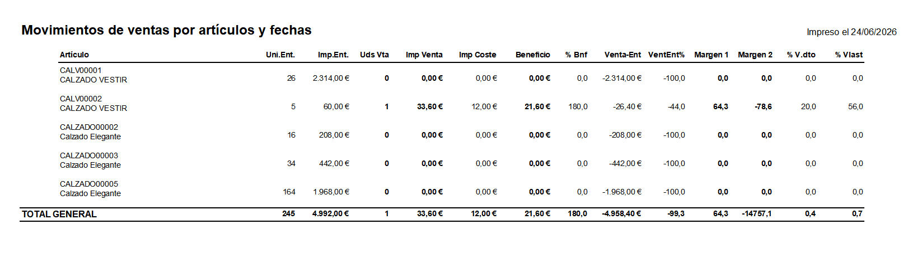

06 · Menú Almacén
El menú Almacén controla las existencias (stock): los movimientos que entran y salen, los recuentos físicos (inventarios) y los informes para analizar el stock.
Estructura del menú:
Almacén
├── Movimientos de almacén
├── Inventarios
├── Documentos de Trabajo
└── Informes
├── Balance de Almacén Horizontal
├── Balance de Almacén sin tallas
└── Movimientos de ventas por artículos y fechasEl stock se lleva por SKU y por almacén. Cada documento que mueve mercancía (albarán de compra/venta, devolución, inventario, traspaso) genera movimientos de almacén, que son el origen de verdad de las existencias.
Movimientos de almacén

Atajo de menú: [Ctrl]+[M]
Consulta y mantenimiento de los movimientos de stock: cada entrada o salida de un SKU en un almacén, con su fecha, cantidad, motivo y documento de origen.
Sirve para:
- Auditar por qué el stock de un artículo es el que es (trazar entradas y salidas).
- Registrar ajustes y traspasos manuales entre almacenes.
Salvo ajustes puntuales, los movimientos no se crean a mano: los generan automáticamente los albaranes, devoluciones, ventas de caja e inventarios.
Inventarios

Atajo de menú: [Ctrl]+[Alt]+[I]
Mantenimiento de Inventarios (recuentos físicos). Permite contar el stock real y regularizar las diferencias frente a lo que dice el sistema.
Sub-pestañas:
- Detalle del inventario — líneas con el recuento por artículo/SKU (cantidad contada frente a cantidad teórica).
- Movimientos regularizados — los movimientos de ajuste que el inventario genera al confirmarse para cuadrar el stock teórico con el real.
- Otros — datos de cabecera (almacén, fecha, estado).
Al confirmar un inventario, el sistema ajusta el stock automáticamente creando los movimientos de regularización necesarios. Revisa bien el recuento antes de confirmar.
Recuento móvil
Además de cargar el recuento desde Excel, el inventario puede enviarse a una app móvil de recuento mediante un servidor puente:
| Botón | Uso |
|---|---|
| Enviar a recuento móvil | Publica el inventario como plantilla para los terminales de almacén. |
| Recoger recuento móvil | Trae las lecturas escaneadas, rellena las cantidades físicas y deja el inventario listo para revisar. |
El recuento móvil no regulariza stock por sí solo. Primero se recogen las lecturas, se revisan las diferencias en Factuzam y después se aplica el inventario con el flujo normal.
Documentos de Trabajo

Documento de Trabajo con líneas cargadas por filtros y el menú Enviar a... desplegado.Atajo de menú: [Ctrl]+[W]
Un Documento de Trabajo es una lista de trabajo de artículos/SKUs: un borrador personal donde vas apuntando referencias con cantidades (con una foto del stock en ese momento) para después convertirla en un documento real o imprimir etiquetas. Piensa en él como un "carrito" interno reutilizable: preparar una reposición, un recuento parcial, una selección para cambiar precios, un pedido que aún no sabes cómo acabará…
La pantalla tiene dos pestañas de ámbito:
- Mis documentos — los documentos de los que eres propietario. Solo aquí puedes crear, editar y borrar.
- Compartidos conmigo — documentos de otros usuarios compartidos contigo o con tu grupo. Se abren en solo lectura.
Cabecera y líneas
La cabecera guarda Título, Tipo (por defecto GENERAL), Estado
(por defecto ABIERTO), propietario, fecha, Empresa y Almacén (el
almacén de referencia para el stock). Las líneas recogen:
| Columna | Qué indica |
|---|---|
| Artículo / SKU | Referencia apuntada, con su descripción. |
| Almacén | Almacén de la línea (por defecto el de la cabecera). |
| Stock | Existencias del SKU en el momento de apuntarlo (ver Instante stock). No se recalcula solo. |
| Cantidad | Unidades de trabajo de la línea (al leer un código, entra 1 por defecto). |
| Origen | De dónde salió la línea: entrada manual, carga por filtros, consulta de stock… |
Las líneas se teclean igual que en Inventarios: con [F1] se alterna el
modo de entrada Desglose (artículo + atributos) → SKU (lectura
directa de código) → Tallas horizontal (rejilla de tallas en columnas).
Botones de la pantalla
| Botón | Uso |
|---|---|
| Listado | Abre una vista previa de Excel con una línea por SKU, su foto de 300 × 300, familia, proveedor, temporada y precio de la primera tarifa activa. Desde la vista previa se puede guardar el libro .xlsx. |
| Cargar artículos... | Carga masiva por filtros (la misma pantalla de filtros que usan Inventarios y las sesiones de tarifas): familias en árbol, proveedores, propiedades/temporadas y almacenes, con opciones de solo activos, solo con stock y excluir lo ya cargado. |
| Compartir... | Comparte el documento con un usuario o un grupo (permiso de lectura). Los destinatarios lo ven en su pestaña Compartidos conmigo. Solo el propietario puede compartir. |
| Imprimir etiquetas | Abre la impresión de etiquetas de artículo con los SKUs del documento (elige tarifa y almacenes como en la impresión de etiquetas normal). |
| Enviar a... | Convierte el documento en un documento real (ver abajo). |
Enviar a...
El botón Enviar a... despliega los destinos posibles. El documento debe estar grabado y tener líneas; el Documento de Trabajo no se consume: se puede reutilizar o enviar a varios destinos.
| Destino | Qué crea |
|---|---|
| Albarán de venta (mayor)... | Un albarán de venta ABIERTO con las líneas y cantidades del documento (número del contador oficial o el que indiques). Los precios entran a 0: asigna cliente, tarifa y precios en el Mto de albaranes. |
| Venta TPV | Vuelca los SKUs con sus cantidades en la venta de caja en curso. Requiere tener abierta Caja ▸ Ventas; los precios los resuelve el TPV con su tarifa. |
| Inventario... | Un inventario ABIERTO donde la cantidad del documento entra como cantidad física y el stock apuntado como teórica. Después usa Recalcular teórico/PMP en Inventarios antes de aplicar. |
| Sesión de cambio de tarifas | Una sesión de cambios de tarifa en BORRADOR con un artículo por línea. Abre Tarifas ▸ Cambios para elegir tarifas origen/destino, regla de cálculo y aplicar. |
Añadir líneas desde otras pantallas: además de teclear o cargar por filtros, puedes apuntar referencias sin salir de donde estás con el menú contextual Agregar a Documento de Trabajo... disponible en la Consulta de stock (
[Ctrl]+[U]) y en la Búsqueda de datos de artículos ([Ctrl]+[E]).
Informes
Balance de Almacén Horizontal

Informe de existencias con desglose por tallas en columnas (horizontal). Muestra el stock de cada artículo repartido por sus variantes/tallas, ideal para artículos de moda. Se filtra (almacén, familia, fechas…), se previsualiza y se imprime/exporta.
El filtro permite trabajar por:
- Modo: entre fechas o por acumulados.
- Bandas: existencias iniciales, entradas, ventas, existencias finales y, en modo desglosado, subtipos de movimiento.
- Almacenes, familias, proveedores, temporadas y artículos.
- Agrupaciones reordenables por almacén, proveedor, familia o temporada.
La pestaña Familias se muestra como árbol. Marcar una familia incluye también sus subfamilias.
Balance de Almacén sin tallas
Informe de existencias agregado por artículo, sin abrir el detalle de tallas. Vista resumida del stock cuando no interesa el desglose por variante.

Incluye artículos con o sin tallaje y usa el mismo sistema de filtros, bandas, agrupaciones y exportación a Excel que el balance horizontal.
Movimientos de ventas por artículos y fechas
Informe de ventas por artículo en un rango de fechas: qué artículos se han vendido, en qué cantidad y periodo. Útil para análisis de rotación y reposición.

Además del periodo de ventas, puede filtrar por Inicio compras para analizar solo artículos cuya primera compra sea posterior a una fecha. El informe calcula ventas, coste, beneficio y dos márgenes: margen sobre lo vendido y margen considerando toda la compra como gasto.
Columnas del informe:
| Columna | Qué indica |
|---|---|
| Artículo | Código y descripción del artículo. Si se agrupa por almacén, un mismo artículo puede aparecer en varios bloques de almacén. |
| Uni.Ent. | Unidades compradas o entradas del artículo. Se toman de los movimientos de entrada de compra/albarán de entrada. |
| Imp.Ent. | Importe de coste de esas entradas. Es el valor comprado, no el precio de venta. |
| Uds Vta | Unidades vendidas dentro del periodo Desde / Hasta indicado en el filtro. |
| Imp Venta | Importe real vendido en el periodo, con los descuentos ya aplicados y según las líneas de factura. |
| Imp Coste | Coste estimado de las unidades vendidas. Se calcula multiplicando las unidades vendidas por el coste del artículo. |
| Beneficio | Diferencia entre venta y coste de lo vendido: Imp Venta - Imp Coste. |
| % Bnf | Beneficio sobre coste: Beneficio / Imp Coste x 100. Mide cuánto se gana respecto a lo que costó lo vendido. |
| Venta-Ent | Diferencia entre lo vendido y todo lo comprado: Imp Venta - Imp.Ent.. Sirve para ver si la venta del periodo cubre la compra completa. |
| VentEnt% | Porcentaje de Venta-Ent sobre el importe comprado: Venta-Ent / Imp.Ent. x 100. |
| Margen 1 | Margen de lo vendido: Beneficio / Imp Venta x 100. Es el margen comercial normal sobre la venta realizada. |
| Margen 2 | Margen contando toda la compra como gasto: Venta-Ent / Imp Venta x 100. Penaliza el stock que queda sin vender. |
| % V.dto | Porcentaje de unidades vendidas respecto a las unidades entradas: Uds Vta / Uni.Ent. x 100. |
| % Vlast | Relación entre importe vendido e importe comprado: Imp Venta / Imp.Ent. x 100. |
En los totales por grupo y en el total general, las unidades e importes se suman. Los porcentajes y márgenes se recalculan a partir de esas sumas; no se suman ni se promedian los porcentajes de cada artículo.